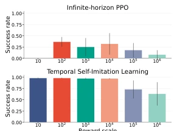
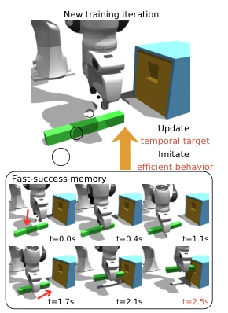
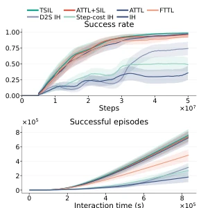
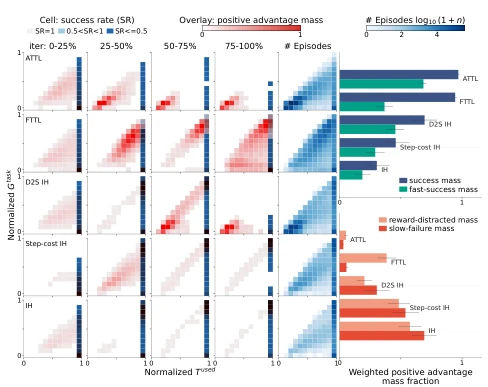
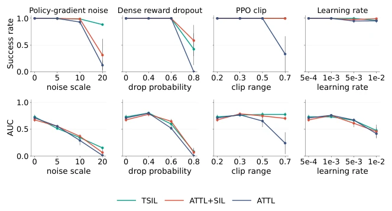
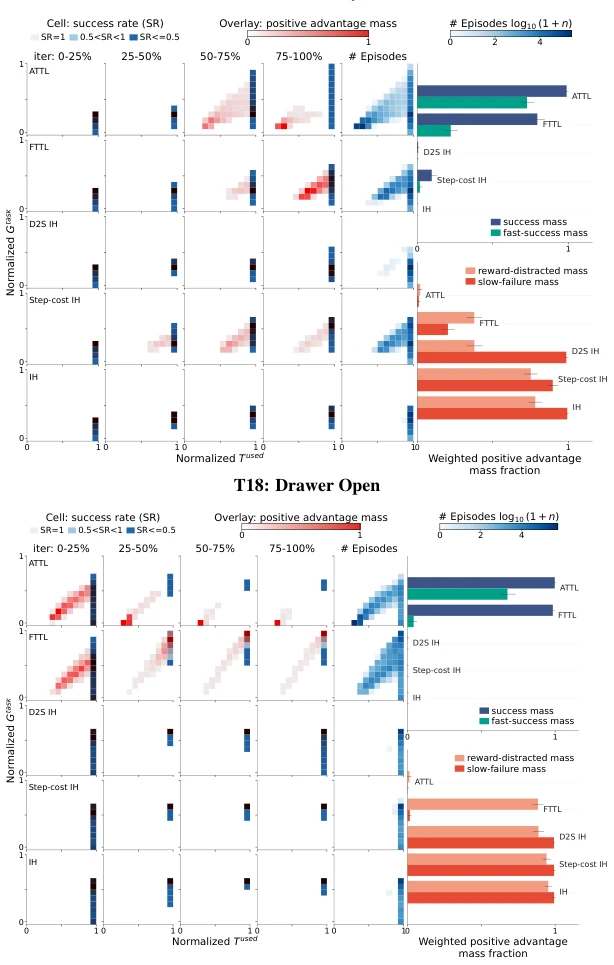
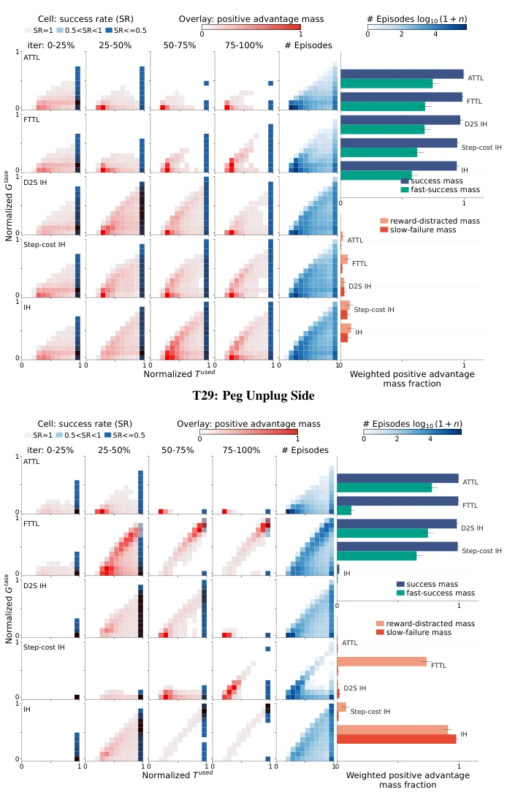
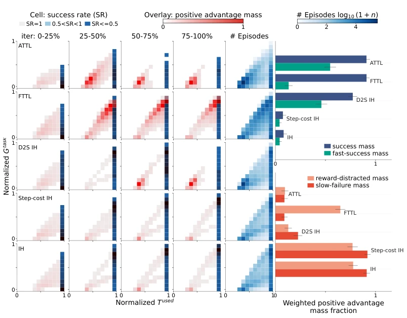

This paper treats "speed" itself as a reward, which is quite interesting. Traditional RL only cares about success or failure, regardless of how long it takes, leading to robots potentially dragging on for a long time to complete a task, as long as they get points in the end. TSIL attempts to mine "fast-success" trajectories and treat them as teachers to teach itself. However, this approach has a fatal flaw: you need successful trajectories first to start learning "fast"; if initial exploration is too poor, fast trajectories cannot be mined at all, and the method fails. Additionally, storing trajectories consumes memory; although the authors say only top-k are stored, this overhead is not small in long-horizon tasks. Overall, it is a clever self-supervised signal, but do not expect it to solve all exploration difficulties; it is icing on the cake rather than a timely help. For embodied intelligence pursuing ultimate efficiency, this counts as a good optimization method, but do not expect it to replace basic exploration strategies.
Long-horizon robotic manipulation policies often rely on dense reward shaping, but high return does not equal efficiency. Robots may complete tasks through inefficient interactions or accidental recoveries, as long as the cumulative reward is high enough [3, 4]. Existing methods, such as adding sparse success rewards, weaken dense guidance [7], or adding per-step penalties suppress exploration [6]. Time-limited MDPs require manual setting [8]. This paper argues that time efficiency itself is an underutilized self-supervised signal, capable of distinguishing efficient success from inefficient success, solving the mismatch between reward and efficiency. This is not just about optimizing speed, but also about improving the robustness and reusability of policies, avoiding robots learning "slow-motion completion" behavior patterns that seem successful but are actually useless.

Fig. 2: Simple success-reward tun- ing is brittle. Increasing the success- reward scale can weaken dense guid- ance, whereas TSIL remains robust by converting fast successes into temporal training signal.
The TSIL framework is based on PPO, with the core being adaptive time targets and efficiency-weighted self-imitation. First, an adaptive time target D(phi) is configured and maintained for each task, recording the fastest successful completion time currently found, serving as conditional input for observations and rewards. Second, the shorter the completion time of a successful trajectory, the tighter the target and the higher the reward. Third, efficient successful trajectories are stored in the replay buffer, performing self-imitation learning weighted by efficiency, prioritizing replaying fast trajectories over high-return trajectories. This both guides the current policy to optimize towards faster behaviors and prevents efficient behaviors from being lost during distribution shift. Through this mechanism, TSIL achieves a smooth transition from "learning to do" to "learning to do fast," without requiring manually designed time penalties.

Fig. 1: Temporal Self-Imitation Learning. Previously discovered fast successful trajectories set adaptive temporal targets and are replayed to guide further policy improvement.
Tested on 15 Meta-World long-horizon tasks, comparing standard PPO and various variants. Metrics include success rate, AUC, 80% success steps, completion time, etc. TSIL outperforms the baseline on all metrics, especially in behavioral efficiency and robustness. Perturbation experiments show that under gradient noise or reward dropout, the replay mechanism can anchor the optimization direction. Ablation studies indicate that adaptive targets are more effective than fixed targets, and efficiency-weighted replay retains fast behaviors better than general self-imitation. Experimental results demonstrate the effectiveness of time efficiency as a self-supervised signal, especially in complex manipulation tasks.

Fig. 4: Main training curves. TSIL reaches high sample efficiency and success while completing more suc- cessful episodes under the same inter- action budget. Shaded regions denote the standard error of the mean.

Fig. 5: Adaptive temporal targets redirect PPO opti- mization. Adaptive temporal targets rapidly concentrate positive PPO update signal on fast successful trajectories while suppressing reward-distracted and slow-failure behav- ior. Left: one representative Peg Insertion Side learning- signal map. Right: aggregated results over all 15 tasks. Er- ror bars denote the standard error of the mean. Details on metric computation are reported in the Appendix.
Fig. 7: MT15 task suite. The appendix contact sheet shows all 15 Meta-World manipulation tasks used in our MTBench evaluation.

Fig. 8: Disturbance-sweep results. Each column sweeps one training disturbance from Table 4; rows report success rate and AUC. Values are averaged over MT15 tasks and seeds for ATTL, ATTL + SIL, and TSIL. The error bars represent standard error of the mean.

Fig. 9: Additional learning-signal maps: Assembly and Drawer Open. Positive-advantage mass is summarized over completion time and task-reward return for T0 and T18.

Fig. 10: Additional learning-signal maps: Hammer and Peg Unplug Side. Positive-advantage mass is summarized over completion time and task-reward return for T21 and T29.

Fig. 11: Additional learning-signal map for T44: Stick Pull. Positive-advantage mass is summa- rized over completion time and task-reward return for the representative Stick Pull task.